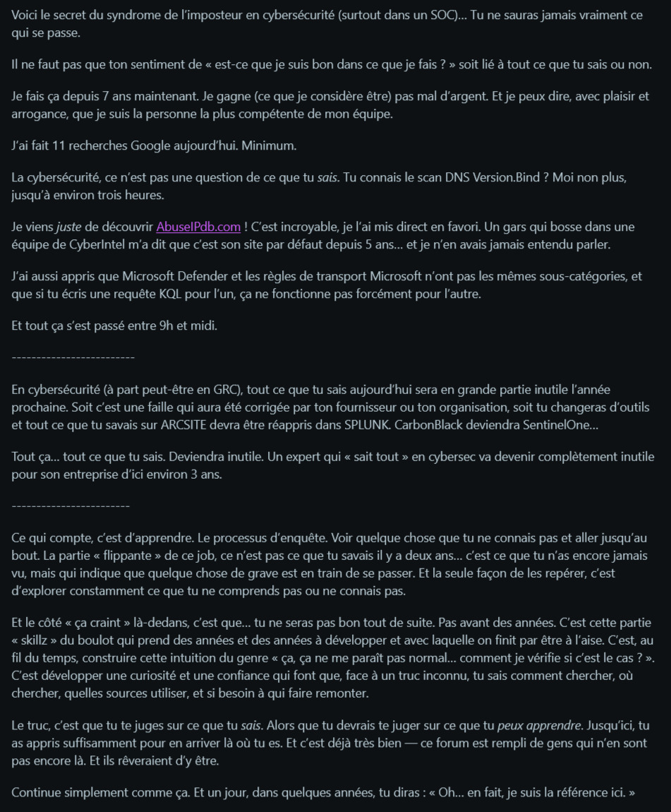

Le syndrome de l'imposteur
Je suis très pris par mes études.
Ce qui ne me laisse pas beaucoup de temps pour partager des choses sur
mon blog.
Je suis assez mitigé sur mon travail actuellement.
D'un côté, j'apprends énormément de choses, et c'est super
intéressant.
De l'autre, j'ai l'impression de stagner, et de ne pas avoir le temps
de découvrir les matières avec passion et intérêt.
J'avais déjà parlé du problème GPT dans le précédent article, cette
ère où les moteurs de recherche traditionnels sont devenus démodés.
Mais le système académique en lui-même est dépassé,
ou pas vraiment adapté aux esprits créatifs et curieux.
Le temps presse souvent, la fatigue arrive vite, on accumule énormément de sujets en peu de temps, le travail à domicile le soir, synthétiser les weekends. Organiser son temps n'est pas si simple, si en plus de cela, on admet une vie sociale, des activités sportives, et d'autres passions.
Le but de cet article n'est certainement pas une critique du monde académique (je réserve cela pour une autre fois, où je tenterai pourquoi pas d'y apporter d'autres points de vue ?), mais du syndrome de l'imposteur qui peut souvent affecter de nombreux étudiants (voire professionnels) en cybersécurité.
Malgré mon ultime passion et ma profonde curiosité pour cet univers,
il m'arrive souvent de douter de mes capacités.
- Alors oui, bien sûr, je n'ai encore aucune expérience
professionnelle dans le domaine,
il est donc normal que je doute.
La technologie évolue si vite, elle élargit encore plus cette
impression d'écart entre ce que je connais et ce que
je ne connais pas. Un peu comme dans tout, finalement, j'ai
toujours eu conscience de l'idée de l'infinie ignorance.
On peut rester bloqué face à l'immensité de ce qui nous attend.
C'est là le piège, et il faut absolument que j'en parle.
Aujourd'hui, lors d'une mini-pause dans mes révisions, je suis tombé sur un thread Reddit sur le syndrome de l'imposteur d'un junior en cybersécurité.
Moi qui me questionne souvent sur ces doutes, et comment m'y prendre pour les dissiper, je me suis reconnu dans certaines de ses paroles.
Et c'est là qu'est apparu un commentaire qui mérite d'être lu par tous
mes camarades dans le même sentiment que moi.
En réalité, l'histoire est plus simple qu'elle n'y paraît.
Le secret n'est pas réellement un secret. C'est peut-être valable pour
d'autres domaines, mais dans le monde numérique, c'est tellement plus
parlant.
Je n'aurai probablement pas plus à rajouter, mais il fallait que je le partage.
Ce commentaire vient de TruReyito.

La traduction GPT (rire) ici :

Finalement… il a raison.
On a beau vouloir cultiver une connaissance éternelle, notre milieu
évolue si vite que ce n'est pas ce que l'on sait qui nous servira le
plus, c'est plutôt la façon dont on met en place l'apprentissage de ce
que l'on ne sait pas encore.
Alors à tous mes camarades qui comme moi, peuvent douter de leurs compétences. Affûtez votre curiosité et vos réactions face aux problèmes.
Apprenez à réagir, pas seulement à étudier.
Quelqu'un qui pense tout savoir devient très vite inutile s'il pense
déjà être arrivé loin.
Vous ferez de meilleures choses et vous serez plus satisfaits de vous-mêmes.